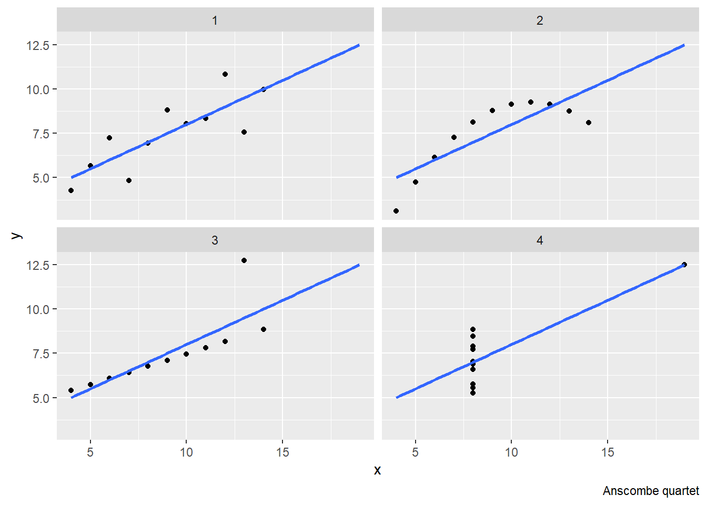

“Regression is a method that allows researchers to summarize how predictions or average values of an outcame vary across individuals defined by a set of predictors” (Gelman et al., 2020, p. 4). We can expand on this by saying that linear regression basically just does one thing: It detects relationships that can be expressed as linear combination of given predictors. However, it can be used for many different purposes or research goals, even if it is, computationally, always the same regression. The challenge of conducting regression analysis is not mainly in writing the code in R or other software, but in understanding regression analysis assumptions and valid interpretation of regression results. These assumptions are both conceptual and mathematical and they differ based on the goals of a particular regression analysis.
We will discuss regression assumption later in the course and will see that the most important assumption are often those which cannot be checked from the data, but are related to theory and the whole design of our study. In this introductory session, we will discuss the different purposes of regression analysis }the different goals we can try to achieve with regression analysis).
We can distinguish four main modeling strategies which also apply for regression analysis:
Descriptive modeling strategies are the least ambitious. Their goal is simply to summarize or represent the data structure in a compact manner (i.e., to capture associations) (Shmueli, 2010, p. 4). We usually make few assumptions when conducting purely descriptive regression analysis as we do not aspire to make any inference beyond the data.
The one assumption we make is that the model is adequately specified. It is always possible to estimate a linear model, but it does not mean it fits the data well. The figure below shows a famous fake data called Anscombe’s quartet (called after the statistician Francis Anscombe). All the four data sets have the same mean of both variables, the same variance of both variables, the same correlation between the two variables and, as clear from the figure below, the same linear regression line. However, they are very different datasets. Even for just descriptive models, we want to make sure that the model describes the data reasonably well.

Examples of questions suitable for descriptive modeling are “Is the voter turnout across administrative regions associated with the level of unemployment?”or “What is the average height of people in this class?”
Sample-to-population inference modeling is more ambitious. Here, the goal is to infer, from a sample, properties of a population. Usually, this is when the populations is too large to observe as a whole and we need to rely on just a sample. Here, there is an additional assumption that the data are sampled from a larger population in a representative manner (i.e. each item in the population has a known non-zero probability of being selected in the sample), or that the data can be adjusted to make inference valid. As we will see later in the course (lecture on assumptions), we can make valid sample-to-population inference even for data non-representative regarding the independent variables, but at cost of making additional assumptions.
Sample-to-population modeling strategies often include some statistical significance testing (which is irrelevant for descriptive models) which we will discuss later including its problems.
Examples of questions suitable for sample-to-population modeling strategies are: “What is the relationship between age and voter turnout in the Czech Republic?” or “What is the average height of people in the Czech Republic?”
Causal inference modeling (a.k.a. explanatory modeling) is extremely ambitious endeavor. It aims to make causal claims. This is a big challenge. Just like with sample-to-population inference, the arguments for causal inference can never be found directly in the data. Instead, they are derived from theory, from information about the data collection process and they usually rely on several assumptions (they are conditional rather then definitive). Even in a relatively straightforward design of a basic randomized controlled trial, the causal argument relies on theory (counterfactual theory of causation (Lewis, 1973) coupled with the law of large numbers). This theory is very compelling and almost universally accepted as sufficient for making strong causal inference.
However, Shmueli (2010) argues that most causal arguments in social sciences rely on other designs and use observational, rather than experimental data. Here, strong theoretical arguments are key to make a persuasive causal inference. We will not go into much detail about the research strategies which enable making causal arguments, because they are more related to design of a respective study than running and interpreting the model, which is the content of this course. To some very limited extent, we will touch on this issue in the lecture on assumptions when we discuss the assumption of validity. For those interested in topic of causal inference in bigger breadth, we think Mastering metrics (Angrist & Pischke, 2014) and Counterfactuals and Causal Inference (Morgan & Winship, 2014) are good books to start with. You may also want to read texts by Judea Pearl, a very influential scholar on causal inference these days (we recommend starting with his overview paper (Pearl, 2009)].
Regarding this course, rather than opening a variety of methodological questions related to causal inference, we just want to stress the goals of causal inference modeling, contrast them to goals of other modeling strategies, especially predictive modeling, and underscore the notion that the procedure of conducting regression analysis is different regarding its emphasis and reporting based on our goals.\
The ultimate goal of causal modeling is to understand the underlying causal process, i.e., the true model which generates the reality around us. The worst fear of causal modeling is bias, i.e. being systematically wrong (rather than being wrong non-systematically due to random chance). There are two ways we use regression for causal inference: (1) we use it for estimating the causal relationship (think of the experimental design), and (2) we use it for adjusting for background variables (also known as conditioning for other variables).
Examples of questions suitable for causal inference modeling strategies are: “Does exposure to political advertising increase citizens’ willingness to vote?” or “Does vegetarian diet in childhood affect height?”
The goal of predictive modeling is predicting the value of dependent variables for new or future observations, .i.e, observations not used to “train” the model. Shmueli (2010) observes that it is rare in social science academic papers, but it is quite common in business applications as well as in some disciplines with high stakes at predicting such as epidemiology. Theory is usually far less important than in case of causal inference modeling. Sometimes, theory is completely disregarded such as in black-box approaches to modeling (e.g. some machine learning or data mining algorithms).
The worst fear of predictive modeling is large estimation variance (i.e., big uncertainty). Shmueli (2010) argues that while bias is also unwelcome in predictive strategies, it is sometimes acceptable when it helps reduce uncertainty: Better be systematically a little wrong but closer to the real values for each prediction, than be correct on average but far from the truth for many individual observations. This distinction between explanatory and predictive modeling is directly linked to the fact that the goal of explanatory modeling is estimating average effects while the goal of predictive modeling is making predictions about individual observations.
Furthermore, it is possible to say that while explanatory (i.e., causal inference modeling) is typical for so called basic research, predictive modeling is more prevalent in applied research. Further distinction is in that predictive modeling is more developed in the field of computer science, while explanatory modeling is more developed in the field of statistics (from which social sciences traditionally draw much more).
This chapter aims to make some general considerations which we think are important before one starts discovering more specific and practical steps of regression modeling. On that note, we would like to conclude it with reference an important point made by (Gelman et al., 2020).
No matter the goal of our regression modeling, there are three concerns: “: (1) what information is being used in the estimation process, (2) what assumptions are being made, and (3) how estimates and predictions are interpreted, in a classical or Bayesian framework” (Gelman et al., 2020, p. 13).
Information is the data itself, but also our knowledge about data collection, sampling, and our prior knowledge of the phenomenon we study (i.e.,theory).
Assumptions concern the functional form (e.g., is the independent variable only included as main effect, or are there also interactions present? Do we raw data or do we transform is somehow?), but also sampling related problems (assumptions about randomness, population coverage etc.), and assumptions about real-life relevance (are the measured responses meaningful constructs, are they stable in time, etc.).
As for interpretation (inference), there are two dominant schools of inference. Classical inference (a.k.a. Error statistics, NHT, Frequentist approach) offers a clear (“objective”) path from data to inferences without relying on external information in the estimating process. (Of course, it also relies on external information such as information about data collection, sampling, etc., but it uses the information prior to the estimation algorithm. Once the model is specified, the estimation algorithm itself only uses the data, no external information). On the contrary, bayesian inference incorporates prior information into the estimation process. The disadvantage of this approach is that it makes space for arbitrary decisions (different people can have different idea about probability of a theory). The advantage is that it can be more realistic (e.g., it can take publication bias into account more explicitly).
While (Gelman et al., 2020) prefer bayesian approach over frequentist approach, we will in this course stick to classical frequentist approach with which students of our department are familiar from their Statistics I and II classes.
For most applications, especially with large datasets typical for social sciences, the two procedures produce almost identical estimates. There are differences in the two schools’ emphases in reporting and sometimes using bayesian estimation can produce results where frequentist procedures do not converge (such as in complicated hierarchical models.)